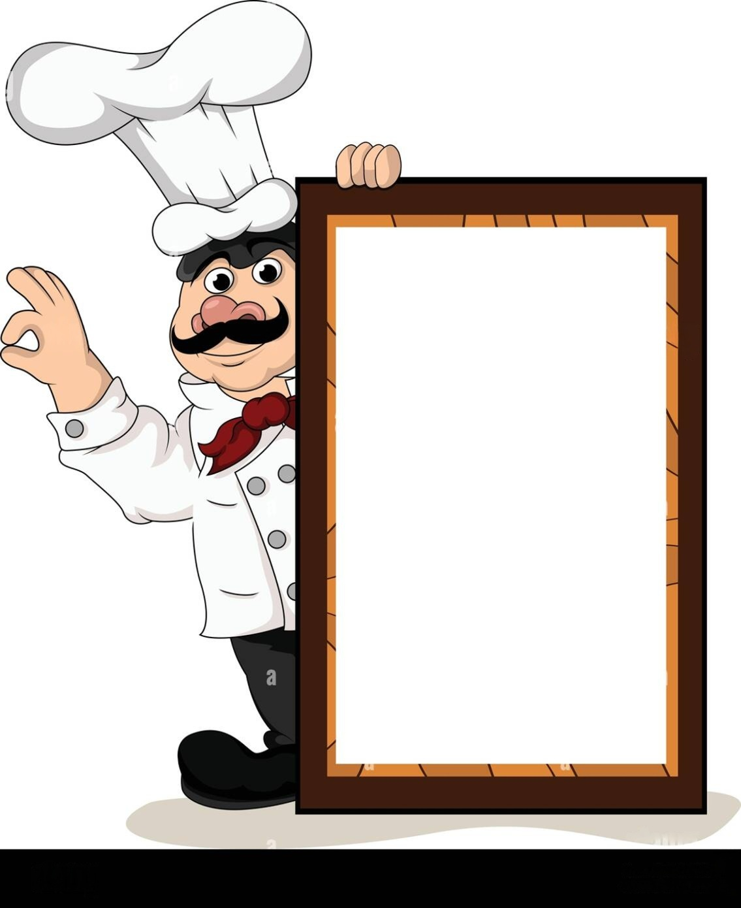

🍴 Kunal - Ruchi Recipes
←
Back to Recipes
Palak Matar
Ingredients
🥬 Spinach – 500 g
🍅 Tomato – 1
🧅 Onion – 2 medium
🟢 Green peas – 1 cup
🌿 Kasuri Methi
🧂 Spices & Salt

Method
Boil spinach and grind.
Prepare masala.
Add peas and spinach puree.
Cook and serve.